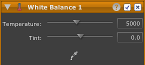

Bilanciamento bianco
Lo strumento Bilanciamento bianco consente di regolare il bilanciamento bianco e la tinta della foto per compensare una dominante di colore nella fonte di luce come la dominante blu del cielo o delle luci a tungsteno.
Nota: per le foto raw, si consiglia di usare prima il dispositivo di scorrimento Temperatura e Tinta dello strumento Regolazioni raw.
Per regolare il bilanciamento bianco di una foto:

- Fare clic sul pulsante dello strumento di bilanciamento bianco nella barra degli strumenti. Sarà visualizzato un nuovo strumento di bilanciamento bianco in cima alla pila strumenti.
- Seguire una delle seguenti istruzioni:
- Usare i dispositivi di scorrimento Temperatura e Tinta per regolare il bilanciamento bianco e la tinta.
- Fare clic sul pulsante contagocce dentro allo strumento; il mouse diventerà un contagocce. Successivamente fare clic in un qualsiasi punto della foto che si desidera trasformare in grigio neutrale. I colori della foto muteranno di conseguenza. Quando si è soddisfatti della riduzione della dominante colore, fare nuovamente clic sul pulsante contagocce per completare la regolazione.
- In alternativa: